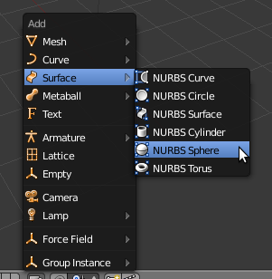

Coração cheio de amor...
1- Comece por criar uma cena limpa de objectos (no início, o Blender começa sempre com um cubo já inserido). Clique na tecla “Delete” ou X para apagar o cubo.
2- Adicione uma NURBS Sphere à cena. Clique em Shift+A para obter o menu da imagem...
3- Modifique a escala da esfera, aumentando-a. Clique na tecla S e movimente o seu rato, clique no botão esquerdo do rato (BER) quando estiver satisfeito.

Se não tiver a ver uma imagem semelhante à acima exposta, assegure-se que está a ver a esfera de cima (NUMPAD 7), Edit Mode (TAB), visão ortogonal (NUMPAD 5) e em modo Wireframe (Z) .
4- Mude para visão de frontal (NUMPAD 1) e assegure-se que está em modo Edit. Assegure- se que retira a selecção de todos os vértices (A). Utilize a selecção por caixa, Border (B), para seleccionar o vértice no meio, ao topo. Veja a figura para perceber onde desenhar a área de selecção.

5- Se voltar ao modo de visão do topo (NUMPAD 7), pode ver que seleccionou mais dois vértices que estavam “escondidos” na visão frontal. Se utilizar a selecção por caixa, selecciona vértices mesmo que estes estejam “escondidos”. Volte à visão frontal (NUMPAD 1).
6- Mude para visão Solid (Z). Active o modo de “agarrar”, Grabmode (G), e mova os 3 vértices seleccionados ligeiramente para baixo. Clique na tecla Z para limitar os movimentos a um eixo.

7- Retire a selecção de todos os vértices (A). Seleccione os 3 vértices do canto superior esquerdo e do canto superior direito (seleccione duas vezes com a caixa). Modifique a escala (S) de forma a que o topo fique ligeiramente maior que o resto. Quando ficar satisfeito, utilize o modo Grab para mover os vértices um pouco para cima.

8- Seleccione todos os vértices de baixo (utilize o B) e reduza a sua escala (S) .

9- Faça com que a parte de baixo do coração seja mais pontiaguda. Seleccione com caixa os vértices do meio em baixo, utilize o grab (G) para mover os vértices ligeiramente para baixo.

10- Na visão frontal, temos um coração! Se mudar para visão lateral (NUMPAD 3) ou de topo, percebe que este coração ainda não está pronto... está muito gordo! Mude para a visão lateral (NUMPAD 3).

11- Seleccione todos os vértices (A), entre no modo de escala (S), bloqueie o eixo Y (Y) e movimente o rato para “emagrecer o coração”.
Repita o processo, tente construir outras formas...

Adaptado do tutorial Creating a Heart in 10 Steps